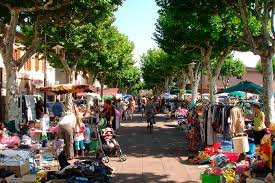

On vend tout et on trouve tout!
Dans les brocantes, tout se vend.
Vêtements, livres, vaisselle, jouets, petits meubles… On trouve de tout dans ces « bric-à-brac » et c’est aussi ce côté caverne d’Ali Baba qui attire : « C’est le syndrome anti Ikea. Beaucoup de personnes en ont ras le bol des objets de consommation courants que l’on trouve chez tout le monde. Elles recherchent des objets singuliers, voire vintage ».
Dans les brocantes, tout se vend.
Avec cet argent, vous pourrez payer vos vacances, aller au restaurant, au cinéma ou que sais-je d’autre…